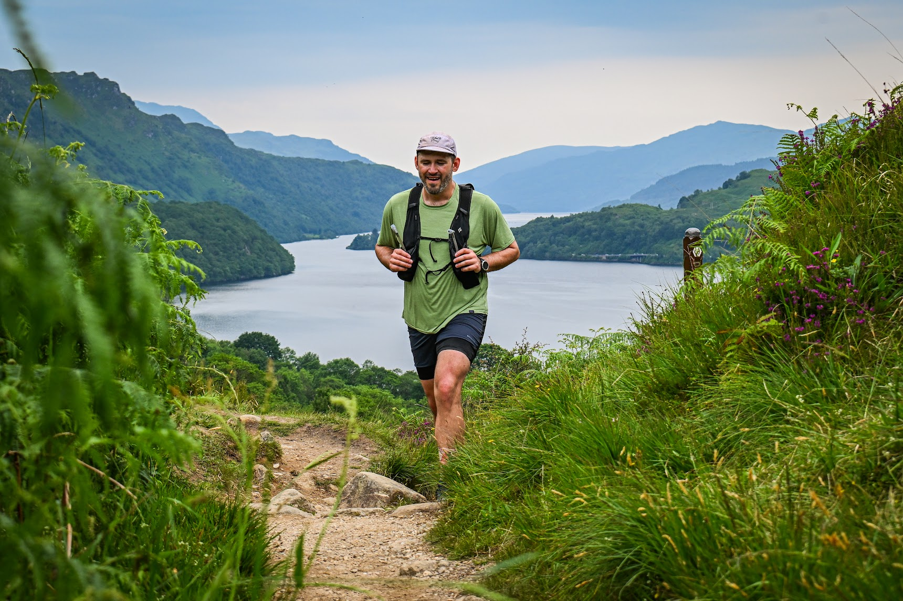

UPLIGHT
Engineering leadership
Leading software teams, mentoring engineers, and keeping maintainability part of the decision, not an afterthought.
BOULDER, COLORADO
I’m Jacob, based in Boulder, Colorado. I lead software teams and teach climbing. In both, I care about sound judgment, sharing knowledge, and helping people grow.

I’m a director of software engineering at Uplight. My career also includes Microsoft and technical leadership at BP.
I studied computer science at the University of Colorado Boulder with a focus on human-computer interaction. My work centers on maintainable software, clear technical decisions, and helping engineers grow.
Professional backgroundUPLIGHT
Leading software teams, mentoring engineers, and keeping maintainability part of the decision, not an afterthought.
BP
Experience guiding technical work in a large enterprise environment.
MICROSOFT
Early career experience at Microsoft, grounded in a lasting interest in how people understand and use software.
A small collection for people thinking about humane software and for climbers preparing for a day in the Cascades.
ESSAY · 4 MIN READ · 2017
For product builders and engineers who want to understand how interface cues, search, and trust can fail users with a different mental model.
Read on MediumROUTE GUIDE & TALK · 2020
Slides with notes and a recorded Beta & Brews session for climbers studying the approach, route, and East Ledges descent.
I got my start in the Colorado Rockies. The Cascades brought me to technical climbing, and a community of volunteers inspired me to teach.
Former chair of the Seattle Climbing Committee, volunteer instructor, and course leader. I teach multipitch trad and water ice with an emphasis on judgment and risk assessment.
Volunteer profileVolunteer instructor and course leader since 2020, sharing mountain skills and helping others build confidence outside.
Volunteer backgroundWEST HIGHLAND WAY RACE · JUNE 21, 2025
I completed the 96-mile route in 34:08:41, with roughly 14,760 feet of climbing through the Scottish Highlands.
Race recordA longstanding Peakbagger log records the summits along the way. The next one is still the interesting one.
For conversations about engineering leadership, mentoring, documentation, or a good day outside.
jacob@wolniewicz.com